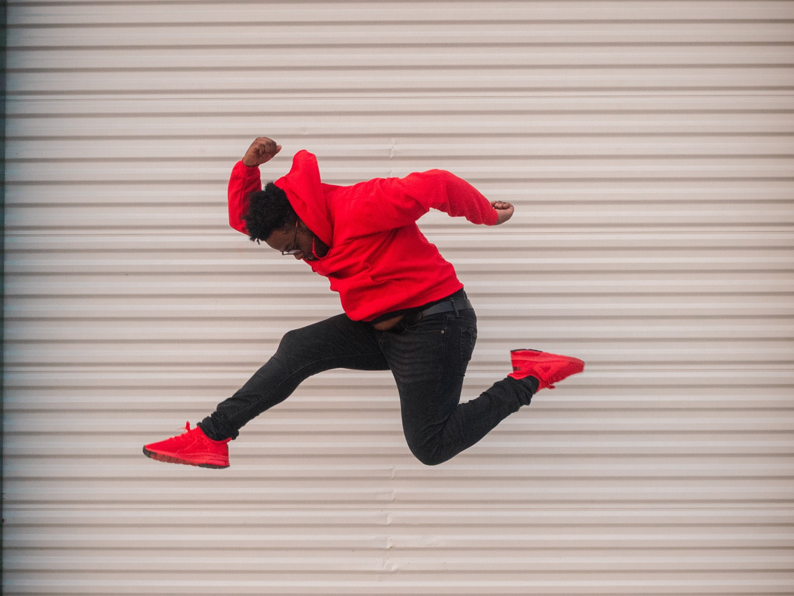
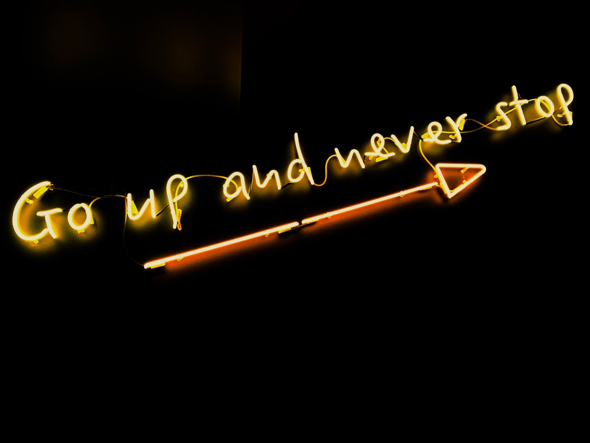
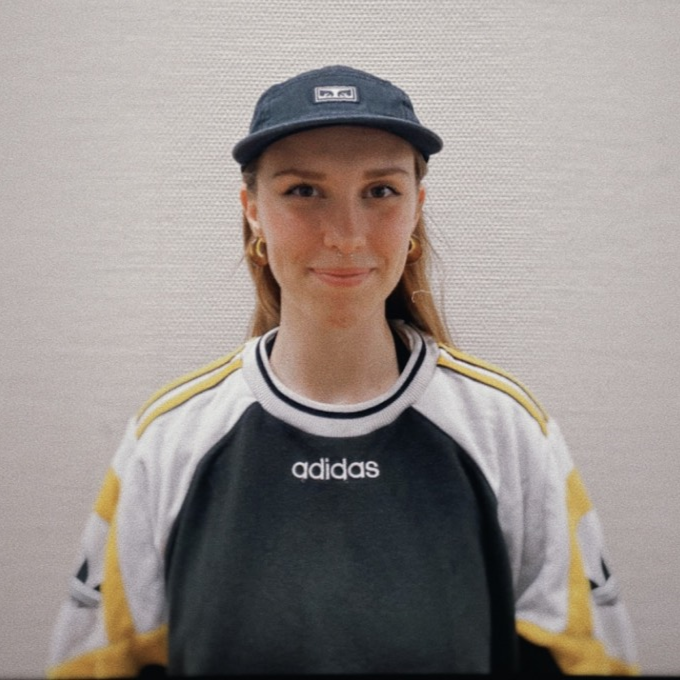
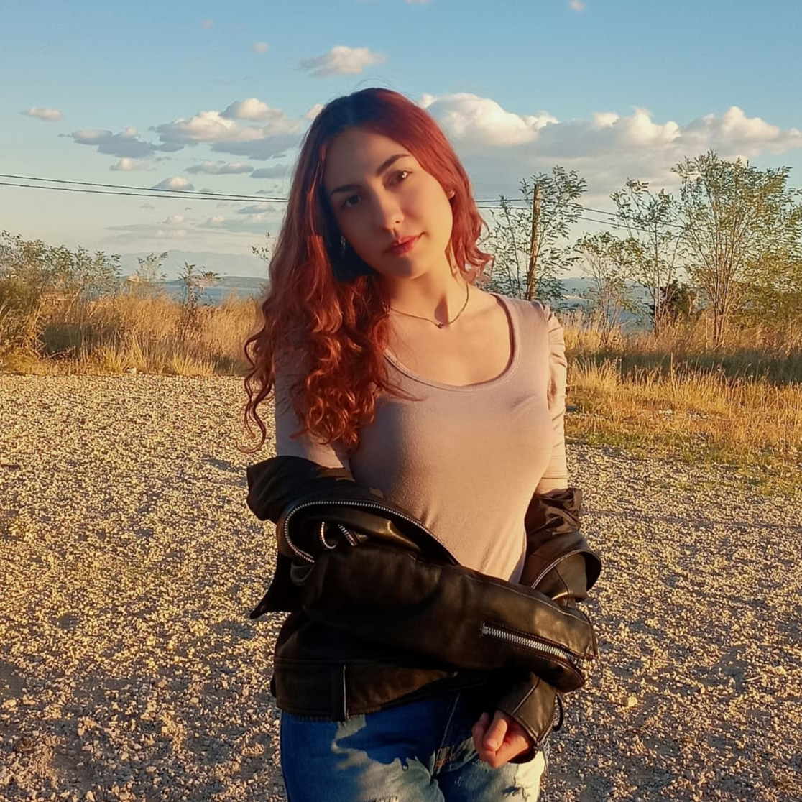
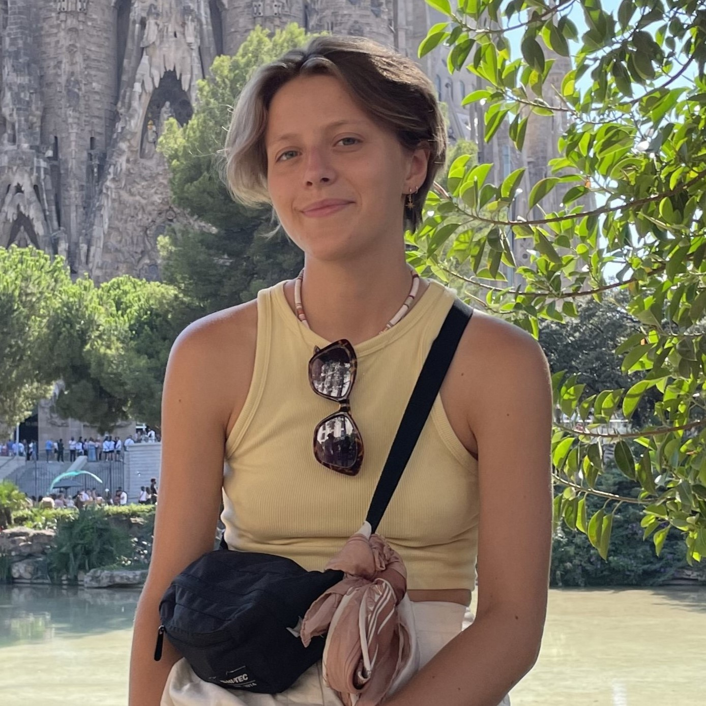

OUR MISSION
BeBold was created to support expats in the Netherlands with their struggles. Being internationals ourselves, we know it can be hard.First, to find accomodation and deal with all the documents and after that - to settle in, get used to cultural differences and find friends.
BeBold team is here to motivate and support you.
Take a step out comfort zone and don’t give up! Things will work out for you!
OUR VISION
"In a world of uncertainty, in which self-doubt and worry scare us away from making a change, we believe that only by staying bold and persistent you become confident enough to act upon your dreams."
OUR VALUES
BOLDNESS
Without a doubt we admit that expats are one of the most adventurous people. In order to experience something fresh and new, they are ready to leave their comfort zones and dive into the unknown. They are not afraid of facing new challenges, from language barriers and cultural differences to being complete alone in a new country. That’s why expats are the embodiment of boldness!

CONFIDENCE
Becoming an expat can be like jumping into a vast ocean of unknown depths, where the waves of unfamiliarity can toss you around. In such a situation, confidence is the lifeboat that prevents from drowning and keeps you afloat. Keeping the confident attitude helps you navigate through the choppy waters of cultural differences, language barriers and homesickness. It empowers you to take risks, try new things, and embrace the adventure of living in a new place. Without confidence, the expat experience can be like swimming with weights on your ankles. So as an expat remember you keep your chin up and let your confidence be your compass, guiding you to new horizons and unforgettable experiences.

PERSISTENCE
As an expat, it's natural to feel homesick, frustrated, or even overwhelmed at times. But with persistence, you can push through those difficult moments and build a fulfilling life in your new home. Being persistent means not giving up on your goals, even when obstacles arise. It means staying committed to learning the language, making friends, and adapting to new customs and cultural norms. Of course, it may take time and effort to achieve these things, but the rewards are worth it. By persistently working towards your goals, you'll gain a sense of accomplishment and a deeper understanding of your new home. Not only that, but persistence can help you build resilience and adaptability - two essential traits for any expat. When you encounter setbacks or challenges, your persistence will help you bounce back and find new solutions. So, if you're feeling discouraged, remember that persistence is key. Embrace the challenges of expat life, keep working towards your goals, and don't give up on the amazing opportunities that living abroad can offer.
ACTION
Action, the secret ingredient that transforms dreams into reality and turns the impossible into the possible. As an expat in a new country, action is what will help you make the most of your adventure. It's about being proactive, taking risks, and having a little fun along the way. It's about being bold and saying yes to new opportunities. It's about embracing the power of small steps that add up over time. Why wait for life to happen to you? Don't think about what you should do and just do it. And then, who knows, maybe you'll discover a hidden talent, a new passion, or even the love of your life. After all, the only thing standing between you and your wildest dreams is the courage to take the first step. So go ahead, take that step, and let your adventure begin.
MEET OUR TEAM
-

Maja Kowalska
A 20-year-old Creative Business student from Croatia who also works part-time here in the Netherlands and enjoys all forms of creative activities. From photography to editing, drawing, and many forms of design, to acting and singing. Wishing to pursue a career in the film or music industries in order to create content and use it to inspire people, highlight issues in our society, and encourage it to grow and change for the better.
-

Lorena Rajković
lorena is a 20-year-old Creative Business student from Croatia who also works part-time here in the Netherlands and enjoys all forms of creative activities. From photography to editing, drawing, and many forms of design, to acting and singing. Wishing to pursue a career in the film or music industries in order to create content and use it to inspire people, highlight issues in our society, and encourage it to grow and change for the better.
-

Maja Branicka
Meet Maja, a 21-year-old Creative Business student from Poland, currently based in the Netherlands. She takes interest in media, mostly revolving around innovative and creative design. She has a passion for cinematography and art and in her free time you'll probably find her practicing yoga, cooking or spending time in nature. Maja loves to travel and explore new places and cultures, so her goal is to work remotly as a digital nomad, combining work with her love for travel.
-
Angie Mateeva
Lorena is a 20-year-old Creative Business student from Croatia who also works part-time here in the Netherlands and enjoys all forms of creative activities. From photography to editing, drawing, and many forms of design, to acting and singing. Wishing to pursue a career in the film or music industries in order to create content and use it to inspire people, highlight issues in our society, and encourage it to grow and change for the better.